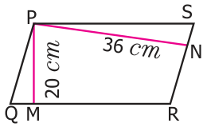
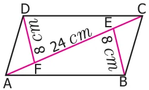
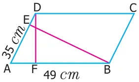
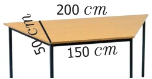

The base of the parallelogram is 16 cm and the height is 7 cm less than its base. Find the area of the parallelogram.
An agricultural field is in the form of a parallelogram, whose area is 68.75 sq. hm. The distance between the parallel sides is 6.25 hm. Find the length of the base.
A square and a parallelogram have the same area. If the side of the square is 48 m and the height of the parallelogram is 18 m, find the length of the base of the parallelogram.
The height of the parallelogram is one fourth of its base. If the area of the parallelogram is 676 sq. cm, find the height and the base.
The area of the rhombus is 576 sq. cm and the length of one of its diagonal is half of the length of the other diagonal then find the length of the diagonals.
A ground is in the form of isosceles trapezium with parallel sides measuring 42 m and 36 m long. The distance between the parallel sides is 30 m. Find the cost of levelling it at the rate of ₹135 per sq.m.
Challenge Problems

In a parallelogram PQRS (see the diagram) PM and PN are the heights corresponding to the sides QR and RS respectively. If the area of the parallelogram is 900 sq. cm and the length of PM and PN are 20 cm and 36 cm respectively, find the length of the sides QR and SR.
If the base and height of a parallelogram are in the ratio 7:3 and the height is 45 cm then, find the area of the parallelogram.

Find the area of the parallelogram ABCD, if AC is 24 cm and \(BE = DF = 8\) cm.

The area of the parallelogram ABCD is 1470 sq cm. If \(AB = 49\) cm and \(AD = 35\) cm then, find the heights DF and BE.
One of the diagonals of a rhombus is thrice as the other. If the sum of the length of the diagonals is 24 cm, then find the area of the rhombus.
A man has to build a rhombus shaped swimming pool. One of the diagonals is 13 m and the other is twice the first one. Then find the area of the swimming pool and also find the cost of cementing the floor at the rate of ₹15 per sq.cm.
Find the height of the parallelogram whose base is four times the height and whose area is 576 sq. cm.
The table top is in the shape of trapezium with measurements given in the figure. Find the cost of the glass used to cover the table at the rate of ₹6 per 10 sq. cm.

Arivu has a land ABCD with the measurements given in the figure. If a portion ABED is used for cultivation (where E is the mid-point of DC), find the cultivated area.